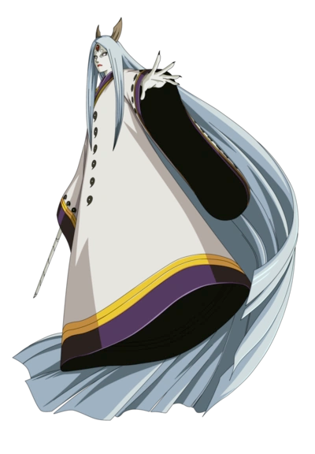
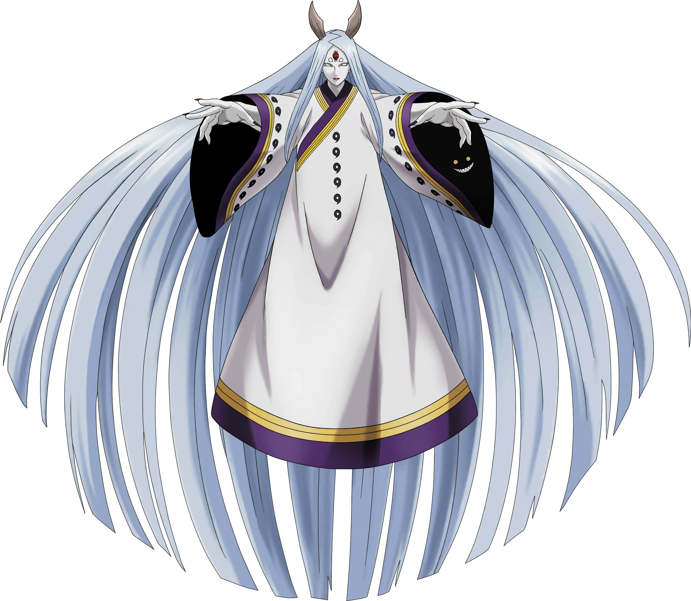

Informações sobre Kaguya Ootsutsuki
Perfil
- Nome Completo: 大筒木カグヤ (Ōtsutsuki Kaguya)
- Idade: Sua idade exata não é mencionada.
- Altura: Não especificada.
- Peso: Não especificado.
Afiliações
Kaguya era originalmente uma princesa do clã Ōtsutsuki, uma raça extraterrestre com habilidades divinas.

Habilidades Especiais
Kaguya é uma das personagens mais poderosas da série e possui controle sobre todos os cinco elementos básicos. Ela pode criar dimensões alternativas e é capaz de controlar a energia da árvore divina.
Objetivos
Kaguya originalmente tinha o objetivo de reunir todo o chakra do mundo em um único lugar para garantir sua imortalidade e poder absoluto. No entanto, suas ambições e métodos acabaram levando à sua derrota pelas mãos de seus filhos, Hagoromo e Hamura Ōtsutsuki.